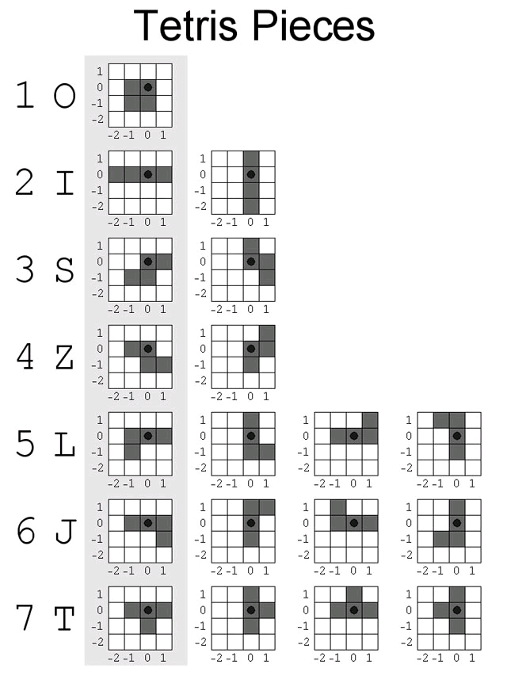

Parallel Tetris
Ece 576 Final Project by Ayush Jiwarajka
| Introduction | High Level Design | Program/Hardware Design | Results/Conclusion | References/Appendix |
Introduction
The aim of this project was to create a 2 player version of the popular game Tetris. The idea was to have each player playing the game on his own screen using the the PS/2 Keyboard for input and at the same time his play would influence the play of his opponent. By that I mean that when a player cleared lines on his game his opponent would go up a predefined number of lines (where each line was a random sequence of blocks) in his game. To add to this each player would be able to to view the state of his opponents game on his own screen enabling him to make informed decisons in his play. For this I used two Altera De2 Boards which were communicating over the serial port. The motivation behind this project was that I wanted to do a project which had a visual component to it and utilised a variety of the resources offered by the DE2 Board. I also wanted to do a project where some element of networking was involved. The design of a game with communication over the serial port accomplished all of these goals and helped me learn how to use a variety of components on the Altera Board.
High Level Design
I started out this project by researching what projects had already been done on the FPGA on the topic. This was a good starting point as it gave me an idea of what was feasible and helped me come up with a design that would work for me. The links to some of the projects I looked at are given below.
I did not use the code from any of these projects but it gave me a couple of design ideas for my own project which I would like to thank them for. Some of the things which I took away from these projects is that the groups had successfully managed to implement the algorithms and game in hardware and software giving me the option of chosing which direction I wanted to go in with this project. Another design idea I got from these projects was the idea of using something known as sprites which is the idea of having each of the tetris pieces predefined and then working of that definition when doing any transformations during the game.
There are a lot of different components that were needed for this project to work. The following sections give an overview of those components before I get into decribing the actual design and code for the game and how the different components are connected together.
VGA
As this project is the design of a game, display is one of the most important aspects. This required a good understanding of the VGA controller so that I could modify it based on the needs of the game. For the working of the VGA I used the book Rapid Prototyping Of Digital Systems (SOPC Edition) by James Hamblen , Tyson Hall and Michael Furman. I had a good understanding of the VGA controller from the previous labs but there was one thing that I had to figure out how to do. This was to change the way the data was read in from the SRAM so as to get a resolution of 640*480. For this I used Professor Land's DE2 Harware examples as reference and a previous year Paint Brush Apllication Project done by Ranjani Chandrsekar and Manu Jain. I would like to thank them for the help. Both of these pages are linked below.
Paint Brush Application Project
Professor Land's Harware Examples
The basic working for this is as follows. The VGA controller has two 10 bit outputs which are Coord_X and Coord_Y. The SRAM takes in a 18 bit address which can be thought if as 9 bit x coordinate address and a 9 bit y coordinate address. The SRAM then returns a a 16 bits value stored at that address. This works fine when doing a 320x240 resolution, but the SRAM would run out of space doing the same color mapping on a 640x480 resolution. To get around this you have to reduce the color depth to 8 bits/pixel, where 3 bits are for red , 3 bits are for green and 2 bits are for blue. This way you essentially double your storage. To do this what you have to do is use the top 9 bits of Coord_X and bottom 9 bits of Coord_Y as addresses into the SRAM. Then you use the LSB of Coord_X to choose between which half of the 16 bit data from SRAM to use as input into the VGA controller.The code for the muxing part is given below.
assign mVGA_R = {(Coord_X[0]?SRAM_DQ[15:14]:SRAM_DQ[7:6]), 8'b0} ;
assign mVGA_G = {(Coord_X[0]?SRAM_DQ[13:10]:SRAM_DQ[5:2]), 6'b0} ;
assign mVGA_B = {(Coord_X[0]?SRAM_DQ[9:8]:SRAM_DQ[1:0]), 8'b0} ;
This was basically how you get the 640x480 resolution reading data from the SRAM. I will describe the full working of the display and how I wrote to SRAM in the design section.
PS/2 KEYBOARD
The next important component that I needed to research and incorporate into the design was the PS/2 keyboard. This is a very important component as well as this was what I was using for the joystick esentially.I used the book Rapid Prototyping Of Digital Systems (SOPC Edition) by James Hamblen , Tyson Hall and Michael Furman again in order to learn about the way the keyboard works. From reading the book I saw how the keyboard keys were all uniquely identified by their scan codes which are listed as a table in the book. I used a verilog module from online which has the vhdl equivalent given in the book. The site where I got the keyboard code from is given below and I would like to thank them for that.
I adapted their module with my project and had it so that I could read the keyboard scan codes when I pressed a key and was able to verify that it was working by comparing the codes to those given in the book mentioned above. I will talk about how I used this in the overall design to detect key presses in the game when I discuss the design and code in the later sections.
RS-232 Serial Port
As I was doing a parallel tetris I needed a way to communicate between the two boards. I used the serial port on the DE2 Board as it was it was fast enough to handle the amount of data transfer that was invovled and I had experience working with serial communication. I used the data sheet to see how the serial communication on the DE2 board worked. The data sheet is given below.
As I was just using the basic features I just used the ground , receive and transmit port on the DE2 serial port. I will discuss the code and the setup later but the one thing that needed to be done in order for the connection to work was that the receive and transmit pins needed to be switched when connecting the two boards. Ill mention this again when I describe the setup to run the actual project.
Block Diagram
The figure below gives the block diagram different components that were used for the game.
The different components are the ones I discussed briefly in the above sections, a NIOS processor and the different pieces used to make the all the components work together successfully. I will describe the code in detail in the Design section but the thing to see here is that this figure represents what runs on one of the boards. The other side runs the same setup and they are communicating using the serial port as shown in the figure.
Hardware/Software Tradeoffs
I had a couple of design decisons to make in terms of what I wanted to do in harware or software. Doing the image rendering and game algorithm completely in hardware would offer speed but would be harder to implement and debug as compared to the NIOS. The NIOS provided easy compile time and debugging features not available in hardware. So as speed was the limiting factor I did a couple of tests where I wrote to SRAM and saw how quick the changes were seen. As the speed was acceptable for a game to be played I decided to do my implementation of the game in software using the NIOS. Now, when displaying the opponents grid on the same monitor ,as I was doing no computation on the data, even though it would have been easier to do the display using the NIOS it would have slowed the game down. So for displaying the opponents grid I did the logic all in hardware.
Program/Hardware Design
There are a lot of components in the project. So I will break down the project into the essential parts needed and explain the code for them.As most of the game design is done in software the first thing to show is the SOPC builder design and components which were also seen in the Block Doagram section above. This will be a good reference to explain the code for the different components.
NIOS
First I just wanted to give a brief description of the NIOS I used. As this project was not going to require significant portion of the boards logic elements I decided to go with the NIOS II/f in the SOPC builder which has a lot more features and is faster. This is a 32-bit RISC processor with a 4kb instruction cache and a 2 kb data cache. It also has branch prediction and some other features. As I was using SDRAM for the program which is 8 Mb, memory usage would not an issue. I inclued a jtag_uart compnent as it enables print statements which help in debugging. The following sections explain the design.
Writing to SRAM
As mentioned before the SRAM now has data stored as 8 bits/pixel. To write the SRAM I used the function writesram which is given below.This was taken from the Paint Brush Application which I mentioned earlier and linked.
void writesram (unsigned int x ,unsigned int y ,unsigned int b ) {
IOWR_ALTERA_AVALON_PIO_DATA(OUTPUTXCOORD_BASE , x);
IOWR_ALTERA_AVALON_PIO_DATA(OUTPUTYCOORD_BASE , y);
IOWR_ALTERA_AVALON_PIO_DATA(OUTPUTSRAMDATA_BASE , b ); }
This function basically drives the buses for the x coordinate , y coordinate and data to be written to the SRAM. The hardware then uses the top nine bits of the outputxcoord from the NIOS concatenated with the bottom 9 bits of the outputycoord as the address at which to write in the SRAM. The data to be written as you would expect is the outputsramdatabus from the NIOS. The thing to be careful about is that when you write to SRAM you have to delay for some cycles as the SRAM only gets the value if the VGA controller is not accessing the SRAM. This is same as making sure that the Hsync and Vsync signals from the VGA are not high. There are a number of ways to do this but i used the way which was used in the Paint Brush Application project which is to have a delay() function that counts to 150. Another small design trick that I used from the Paint Project was that when you loop to write pixel values to a small area of the screen you increment the x coordinate by 2 as you are writing 2 pixel values with every write. To write 2 pixels in one value, you write one value, shift the variable left by 8 bits and then OR with the second value. I used this for my initializescreen() function which I adapted from the Paintbrush Application project.
Game Design
Now that I had figured out how to write to the screen using the NIOS to get a 640x480 resolution I had to design the basic tetris pieces. I started out the design by realising that each tetris piece can be broken down into 4 smaller squares. So first I decided how big I wanted to make the small square and how big I wanted the playing grid to be. I decided to make the small square 20 pixels x 20 pixels and the playing grid 20 x 10 which essentially means a grid of 200 small squares. The following figure illustrates this point.
Now that I had decided this, I wrote a createunit() function which takes an x coordinate value, y coordinate value and a color as inputs and draws a 20x20 pixel square with the x and y coordinates as the center of the square.
Next design decison was to decide how to represent a tetris piece. I decided on having a struct coordinate which which has an x coordinate and y coordinate field. Then I made a tetris_piece which had 4 coordinate structs defining the locations of the 4 small squares that make up a tetris piece. It then had a type field which identifies what kind of tetris piece it is as there are seven distinct type of tetris pieces. There was a state field to keep track of the orientation of the piece which helps with figuring out how to rotate the piece. The final field was a color field as each piece was a different color. Now that I had a struct defining a piece I wrote a function draw which took a struct tetris_piece as input and drew the piece as defined by the coordinates on the screen.
Tetris Pieces Design
Now that I had the basic struct for a piece and a function to draw the pieces I decided to define a 7x11 array called piecessprites in which each row defines one of the 7 distinct tetris piece. The 11 values are the 4 pairs of x-y coordinates that define a piece, the type representing which piece it is, the state which the piece first starts out in and finally the color of the piece. These arrays are used to populate the fields of a tetris_piece struct. The figure below shows the 7 pieces and what their different possible orientations are. I have also attached the link for the figure from wikipedia.
http://www.colinfahey.com/tetris/tetris_diagram_pieces_orientations_new.jpg
{kind=link}
There is an important point to mention. Before I was able to make the the arrays and define the coordinates for the pieces I had to pick the regions on the screen where I was going to display the players grid, the region where the next piece was displayed, the opponents grid and the region to display the players score. It was important to decide the regions as the arrays defined the starting position of the piece when the actual game was played. So it was important to know where the new generated piece was supposed to start dropping down from. Before I talk about the functions to change the position of the piece there was one function I wanted to explain. As I was doing the drawing of pieces by writing to memory, I wanted to minimize the number of writes to memory when the position of the piece changed. For this I wrote a function drawpiece_tnext which takes in the struct tetris_piece representing the piece at time t-1 and the piece at time t. This function then compares the coordinates of both the pieces and erases only those squares for the piece at time t-1 that dont overlap with the piece at time t + 1. Similarly it draws only those squares for the new piece which were not there in the piece at time t -1. This helps speed up the process because if for example the piece was a square and you try and rotate it, this function doesnt waste time first erasing the old piece and then redrwaing it at the same place. It leaves the piece as it is.
Piece Movement Functions
Now that I had the functions for drawing the pieces and the definitions of the pieces I had to write the movement functions. The basic ones were moveleft , moveright and movedown which took in the current piece which is a tetris_piece struct and returns a modified tetris_piece struct with the appropriate coordinates. For example, the movedown function takes the original 4 coordinates which define the piece and add 20 to the y value of each of the 4 coordinates. The reason you add 20 is because each square in the grid is 20x20 pixels. So if you move down one square the y coordinate value increases by 20. This similar logic is applied to moveleft and move right as well with the x coordinate values changing in that case. The tricky function was the rotate function as what happens depends on the previous state and the type of piece . This is where the original tetris piece struct definition was very important as it simplifies this function. For this function the input is again the current tetris_piece struct. The function checks what the type of the piece is and what the current state is. When I say current state I mean the orientation of the piece as were seen in the tetris pieces picture earlier. To get the rotations right I drew a grid and saw what the changes in the piece would be when it rotated and then modified the coordinates in the function appropriately. Similary I updated the state of the piece every time it is rotated. The number of states depended on the number of orientations the piece could have. To give an example of how this would work, assume that the piece was a T and I defined this orientation to be state 0. Let the coordinates defining this piece be (0,0) , (0,1) , (1,1) , (0,2). When this piece is rotated the coordinates become (-1,-1),(0,1) ,(0,0) and (1,1) and the state becomes 1.As I remember what I define as a particular state using careful coordinate updates I got the correct rotations for the game.
User Input
As I mentioned in an earlier section, the user input is through the PS/2 Keyboard. The keys used by the game were up,down,left, right and spacebar.Left,right and down move the piece by one small square in the grid in the appropriate direction. The spacebar key makes the block go all the way down till it collides with a piece or the bottom. In this section I will describe how I read a particular keyboard input and interpreted it. There were a couple of things I had to do in hardware and in software to make the keyboard work. First I will describe the harware changes. As I had mentioned earlier I used a Keyboard module which had been adapted from Digital Sysytems book I had mentioned earlier. What this module does is that whenever a key is pressed it generates its own clocks and shifts in the bits of the scan code which uniquely identify a key. Now this scancode is what is eventually read by the NIOS and then interpreted as the appropriate key. The problem with this for me was that if some one was pressing the key continuously then the bits being shifted in were continuously changing and the NIOS would not be able to figure the key out as there would be a lot of bit combinations for the same key. To get around this I used the scan ready clock generated by the keyboard module which goes high when it is shifting in a new set of bits. This for a particular key press went high 4 times. So I kept a count register which counted till it was 4 and then incremented a count1 register by 1 and reset count to 0. Now I assigned a register called keyscanreg the current scancode value it saw only when count1 changed. I then passed this keyscanreg as the input into the NIOS. The reason this helped was because as the keyscanreg only changed when a key was pressed its value would not constantly change as new boits shifted in. This reduced the number of possible scan code values that could be read by the NIOS down to 3.The reason there are still combinations is because if a button is presses a couple of times really fast or kep pressed this register does change fast as well. In that case the NIOS might sample the value at different points of the bits being shifted in giving rise to the different combinations.
The software part was tricky to implement as well. The things I had to get around was that since the scancode register kept its value even if a key was not pressed again, I needed a way to interpret the key only when it had been pressed again since the last time. To get around this I used an input into the NIOS called keycounter. I then kept a currentcount and previouscount variables. The keycounter input is the count1 register I had mentioned earlier as that updates only when a key is pressed. So in my game when I read a key I assign the currentcount the count1 value and then compared it to previouscount. If it is greater than previouscount then I interpret the key and take action. After that I set previouscount and currentcount equal to each other. This is seen in tetris.c file linked later.The next problem I had was that I needed a way to be able to record multiple key presses or if a key was being held down. To solve this problem I ran a loop that executed 30 times, and in each loop iteration I interpret the key and take the appropriate action. I ran the loop 30 times as that number gave the user time for enough distinct key presses so as to make the game realistic as you should ideally be able to move across the entire screen before moving down even one block. The problem to doing this is that the scancode that is read in could now be more that one value as I was now accounting for a key having been held down or it being pressed very fast. To get around this I used print statements in the loop at the point where the currentcount is evaluated to be greater than the previouscount signalling a key press. Printing the keyscan code as seen by the NIOS at this point enabled me to see the different combinations for the keys the NIOS was seeing and I was able to use this in the cases for deciphering a key. These were the tricks I used for user input and making the response quicker.
Serial Port
I want to describe the how the serial port is used using by the NIOS before describing how the game algorithm works. As mentioned earlier I added a RS-232 UART Module to the NIOS using the SOPC builder. The UART basically raises an interrupt which I connected to the IRQ 1 line. So everytime there is data that comes in I had a function serialinterrupt that handle the data read. There are two things you do to make this work. First is registering the registering the IRQ 1 line and provding the function to go to for handling the interrupt. This is done with the following code.
alt_irq_register(UART1_IRQ, (void*)&count, serialinterrupt );
The way you read data is with the following code IORD_ALTERA_AVALON_UART_RXDATA(UART1_BASE). Writing to the serial port is similar where the code is IOWR_ALTERA_AVALON_UART_TXDATA(UART1_BASE, data). The tricky part with the write when you do multiple writes is that you have to wait till the UART is ready before you can write to the UART again. So I had to read the NIOS forums to figure out that you have to wait till the ready to transmit bit in the status register of the UART is 1 before wrting again. You can do this by looping and checking the bit and exiting the loop when it was 1. The code for that is given by while((IORD_ALTERA_AVALON_UART_STATUS(UART1_BASE) & 0x040) != 0x040){ ;}. The AND with 0x040 is because the status register bit 7 is the transmit ready bit. This is how to do reads and writes using the serial port.The link to the altera forums is given below.
Playing Grid
One last thing to describe before getting into the actual game algorithm is to describe how the mapping of the pieces is done to the actual grid and state of the game is maintained. As mentioned earlier the playing grid is 20x10 small squares. As I picked the region for the grid I knew the coordinates for the 4 corners of the 20x10 rectangle. What I decided to do was to keep a 20x10 array in the actual game program to represent the grid, where if the value in the array was 1, that meant that the piece was occupied and if it was 0 then it was not. This is how I decided to maintain the state of the game. There was a tricky part in terms of the the coordinates though. Now in the actual VGA monitor coordinates the X coordinates is the horizontal line, but in the array the x represents the colums. So I wrote a coor_change function given below.
struct coordinate coord_change(struct coordinate t9){
struct coordinate output ;
output.x = (t9.y - 50)/20;
output.y = (t9.x - 70)/20;
return output ;}
The reason the transformations work like this is because the top left square in the grid is the [0][0] index in the array. As i started my playing region at x = 60 and y = 40, the coordinates for the center of the first square is x = 70 and y = 50. Thats why this gives a 0,0 output if put into the function. Also notice that if the y coordinate of screen coordinates change the x coordinate of the array changes.This is because as I mentioned earlier the y coordinates on the screen now represent the rows in the array. This is the basic structure that was used for the grid and will be mentioned in the game algorithm and collison detection.
Game algorithm
The basic game algorithm steps are listed below
1.Outer Loop checks if gover veriable is set. If it is game is over. If not then set current piece to be the next piece. Set nextpiece to be one of the seven pieces chosen randomly using the rand() function.Display the current and the next piece.
2.Inner loop runs till a collison is detected. Will discuss how collison detection is done in next section.Till collison is not detected read the user input using the loop discussed earlier. Update the currentblock based on user input and what is an acceptable move based on the grid occupancy. Once done with reading user input move the block down by one small square. If there is a collison then update the state of the grid occupancy by setting the value to 1 in the array for the indexes which the coordinates of the current block map to. So for example if coordinate is (70,50) set the array value at (0,0) to 1.
3.Once there is a collison and you exit the inner loop update the grid occupancy state by clearing the lines which have been made. I did this by having a temp 20x10 array. I then took the current grid state array and copied only those rows into the temp array which werent full. I then filled the rest of the rows with 0 values as that represents no blocks. I kept track of the number of rows that I didnt copy over as those represented the lines made by the player. This variable is what I used to update the current score of the player.
4.Now that I had an updated state, I had to check if the other player had made a line. I did this by reading the input into the Nios which was othermadeline.I set this line in the serialinterrupt function based on the data I receive from the other player. If the other player did make a line (can be only 1,2,3 or 4) I create another grid array called tempgrid2 where I fill the number of lines the other player made starting bottom up with 1 or 0 picked using the rand function.Then I fill the rest of the lines with the values from the tempgrid1 which had the state of the system once the lines were cleared.
5. Now that I had the final updated state it was time to write memory and actually update the screen. The trick here is that you dont want to update memory locations which keep their values after the update. So what I did was I looped through the tempgrid2 array and the original state before the updates which is represented by tempgrid, and updated tempgrid for only those locations that were different from tempgrid. At the same time that I updated tempgrid, I also updated the SRAM.
6.Now came the tricky part. I had to send the state of the grid across to the other player. So what I did was I created 36 variables where each variable represented 5 bits of the current state of the grid. Remember that each value in the grid can only be a 1 or a 0. In the loop I basically OR'ed the variable with the bit and then shifted the variable left by one. This way the variables held the bit values in the order they would be seen on the grid. Once I had these variables I wrote each of these variables into the serial port using the functions I had described earlier. As I knew what order I sent them in I knew what order I would receive in them. I then sent an 0xff byte which I will explain the importance of later. Finally I sent the value of how many lines the player made which is variable used to update the score.
7. The final step is checking whether the game was over. To do this I check if any of the squares in the second row are filled. If they are then I exit the outer loop and the game is over.
I will discuss how the data is interpreted when received by the serial port and how the screen is drawn for the opponent in the VGA Controller section.
Collison Detection
In this section I will describe how I did collison detection at various stages of the game. The first time when this is needed is when updating the piece on a user input. What I do on a user input is that I create a temp tetris_piece struct which gets the updated coordinates based on the user input. If the coordinates lie outside the playing grid, or if for the 4 coordinates the corresponding entry in the tempgrid array which holds the current state of the grid is one then I dont update the piece otherwise I do. In the case when spacebar is pressed the update of the coordinates is not as simple. For each different x coordinate in the tetris piece I see what the highest y coordinate can be before there is a filled piece in the grid. I then take the minimum of these y coordinates and update the current piece's coordinates relative to that. These were all collison detections for the user input updates. Once I am done reading the user input I have to check again for collisons if the piece was to move down by one square. First for the different x coordinates that define the piece I find the maximum y coordinate. Then for each of the these x,y pair I see in the tempgrid array if the square below is filled or not. If any of these are filled then there is a collison. If not then I check if the max y coordinate of the piece is at the bottom of the grid. If it is then there is a collison. If neither of these conditions cause a collison then I move the piece down by one square.The collison detection is made easier by picking a proper way to represent the state of the grid and spreading out the collison detection logic.
VGA Controller
The VGA controller I started out with was the one I
referenced earlier in the report which was one of Professor Land's DE2 hardware
examples. There are changes I had to make to the controller in order to make
this project work. I will break down the changes based on the section of the
screen they affected. There are 4 distinct regions on the VGA monitor for this
project. The players grid, the grid to display the opponents status, the section
displaying the next piece and the section displaying the score of the player.
The players grid and the next piece area were both drawn using the inputs from
SRAM. This was already implemented and I didnt have to change that logic. For
the players score display I knew what coordinate range corresponded to that
area. So I used if statements in the VGA controller to know when the contrller
was in the area. To display the score I wrote a hexout module in the VGA
controller which took in a 4 bit value and gave out a 7 bit output which
represented which segments should be on similar to a seven segment display. I
used the iscoreofplayer input into the controller which was an output from the
NIOS, and used the hexout module and logic to figure out what segments should be
on for different digits. I then used if statements and the outputs of the hexout module to draw to a
particular coordinate range for each segment which I picked.An example of this if statement is
given below.
if((((H_Cont - X_START) > 280 ) && ((H_Cont - X_START) < 300)))
begin
if(((V_Cont - Y_START) == 150))
begin
Cur_Color_R <= {10{digit3[0]}}
Now as I new what coordinates corresponded to what segment
in a digit, I use the hexout module output to map to the appropriate
coordinates.Now I had to display the opponents grid. This was based on similar
logic like displaying the score. I used the irow191817 ,irow161514 , irow131211,
irow1098 ,irow765 and irow432 inputs which are ouputs form the NIOS. Each of
these is a 30 bit wire, where each bit specifies the state of a small square on
the opponents grid. If the the bit is one the square is there and if it is 0
then it is blank. Together the 180 bits represent the bottom 18 rows of the
opponents grid. I dont draw the top 2 rows as them having anything would mean
that the opponents game is over.To draw the squares I used if statements similar
to the one used for scoring as I knew what coordinate range corresponds to what
square of the opponents grid. Knowing the mapping and knowing what bit in the
input corresponded to what square of the opponents gris helped me draw the
opponents grid. An example of the if statement used is given below.
else if( (((V_Cont - Y_START) > 420 ) && ((V_Cont - Y_START) < 440)) && (((H_Cont - X_START) > 380 ) && ((H_Cont - X_START) < 400)) )
begin
Cur_Color_R <= {10{irow191817[9]}} ;
Cur_Color_G <= 0 ;
Cur_Color_B <= 0;
end
This is statement basically shows that if the VGA is in the
range of a particular box, draw the pixel if the input bit corresponding to that
box is on as well.I have discussed how I drew the opponents grid. Now I will
discuss how the NIOS actually processes the data from the serial. For the serial
port I mentioned before that the serialinterrupt function is called every time
new data arrives. As I knew what order I sent the data in, I realized that if I
kept a count I would know exactly what the data I received represented. So I
created a count variable that I passed into the serialinterrupt function as
context. Everytime time I got data I knew by looking at the count what the data
was and then I incremented the count till the cycle of data restarted which is
when I reset the count. For example, the first data I send is the first 5 bits
representing the grid occupancy of the last row. So when count is 0 and I
receive data I know that I have to update the output which is row191817 which
goes into the VGA controller.Now the way I do the writes is that I know what
bits the data I receive correspond to in the output wires going into the VGA
controller. So first I read the value of the wire and store it in a temp
variable. Then I zero out the bits in the variable that I am going to write using
the data I receive. I then shift the data by an appropriate amount and OR it
with the temp variable.It is this updated variable that I drive with the NIOS.An
example of this is given below.
if(*count == 0)
{
IORD_ALTERA_AVALON_PIO_DATA(ROW191817READ_BASE);
tempdata = tempdata & 0xfffffC1f;
data = data & 0x0000001f ;
tempdata = tempdata | (data << 5);
IOWR_ALTERA_AVALON_PIO_DATA(ROW191817WRITE_BASE, tempdata);
}
As can be seen in this example the first thing I send is the top half of the bottom row. So I write those bits to the corresponding bits in row191817 output which is bits 9:5.One thing I do when sending the data is to send a 0xff byte before I send the score of the player. I do this so that the program can correct its count in case it falls out of sync with the received data in case some data is lost. Basically the recieving side resets the count to that of the next byte it expects after the 0xff when it recieves a 0xff byte.This is how I did the display of the game.
Results & Conclusions
The project was completed before the deadline. The game was fully functional. All the pieces and the operations on the pieces were successfully implemented. The serial port communication worked well. I was also able to successfully display the opponents grid using the data received over the serial port successfully. The game can be played as a single player and two player game.
Though the game was fully functional there were some glitches which I saw. For the VGA display which was done from the SRAM, there are times when pieces leave behind a few pixels when they were updated. These specs were cleared when another piece went over them and they did not interfere with the logic. I was not able to figure out why this happened as I made sure in the code that I cleared the entire block when it moved. I could only think of the reason being that sometimes the value was not successfully written to SRAM by the NIOS. Another glitch was the responsiveness of the keyboard input. I got the delay between a key press to update down to an acceptable level but it still could have been better. There are times when a key press does not get acknowledged and requires another press for an update. This is because of the way I did my user input where I was reading the scancode from the NIOS. I feel as if doing the user input that way leads to cases where an update is missed because the NIOS might read a little early or too late. In most cases the update is fine but there are some glitches as mentioned above.
Despite the glitches I believe that the project results met my expectations. I was able to achieve the functionality and goals that I had set when I started the project. Despite that there are definitely things that I would do differently if I has the chance to redo the project. The first thing I would do would be to have the user input be detected on an interrupt and using a queue to service the requests. This would give better responsiveness and accuracy improving the gaming experience. The second thing I would do would be to make the entire VGA display using NIOS outputs and logic in the VGA controller. The reason I would do this is because it would make the updates a lot quicker and would look better.
This project was a lot of fun to work on and I learned a lot while working on it. Most of the C code for the NIOS and the VGA controller logic was written by me. The places where I referenced or used designs I have linked the sources in the report. I will also mark the sections in the code that I wrote to make it clearer.
IP Considerations
The project uses the altera and terasic codebase for the VGA controller and the DE2 top module.
Features to Add
There are a lot of different features that can be added to
project. I thought of a few which I list below.
1.Add sound to the game.
2.Add multiple levels.
3.Add a better user interface to choose the different modes of play.
4.Make the game networked using ethernet or wireless to make it more that 2 players.
Setting up the Project
There are a sequence of steps to follow to get the project working.These are listed below
1.Unzip the project and compile. Then Program one DE2 board. Connect a PS/2 Keyboard to the board.
2.Start the NIOS2 and set work directory to tetris in the main folder.
3.Run the project as NIOS2 Hardware. After compiling you should be able to play as single player.
4.Now stop running the NIOS by pressing the stop button in the NIOS console.Then disconnect the blaster cable from that DE2 board but leave it on.
5.Connect the blaster cable to another board.Coneect the ground,transmit and receive pins on the serial port between the two boards. Just make sure that the
transmit of one is connected the the receive of the other.
6.Connect a PS/2 keyboard to the second DE2 board. Program the board and run the NIOS as hardware as done earlier.
7.Once you see the game working on the second computer press KEY0 which is reset on both and you can play 2 player tetris.
8.In case you see the pieces not responding, check the scancode on the HEX0 - HEX5 and change the nios if statements to represent what they
they show for each key. Sometimes they are not the same as what the code has them coded in as. This is a minor change.
References/Appendix
I have mentioned the different sites that I used and for what purposes earlier. I will cite those again and a couple of others. I want to thank Professor Land for his help on this project. I want to also thank Shane Pryor and Amit Penmetcha for their help with the VGA display.
References
Tetris Reference Project 1
Tetris Reference Project 2
Tetris Reference Project 3
Paint Brush Application Project
Professor Land's Harware Examples
Keyboard Code
Altera UART Datasheet
Altera Website
ECE 576 Website
Code
The main software files
tetris.c
tfunctions.c
tfunctions.h
The main harware files
DE2_Default.v
VGA_Controller.v
The keyboard files (source cited above)
keyboard.v
hex_7seg.v
oneshot.v
The zipped project
tetris.zip
Images
{kind=link}
{kind=link}
{kind=link}
{kind=link}